Autonomous Route following system for small degree routes
Contents
Problem Definition:
In real world, we have a lot of straight highways. In this highways, we do not need to make an movement to drive. We can just start our cruise control and lock our cars' wheel. Do you think that it is simple?. Actually there is not any highways, which is 100 percent straight. Because of this situation we can not lock our the wheel of our autos and can not go straight
Problem Solution :
To lock our wheel and watch the route, we can design a controller and our system can follow our routes autonomusly for small degree. For example our system can follow small sinus signal. You can see our system.We assumed that it is unicycle robot. We are going to adjust our robots' angle via controlling angular accelartion
My system:
imshow(imread('system.jpg'))
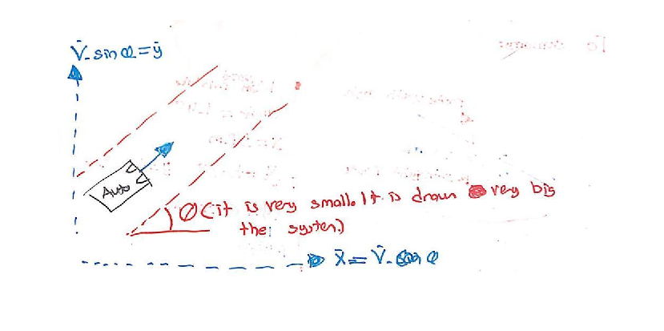 Mechanical Equation of our system
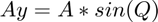
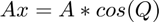
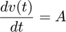
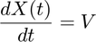
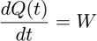
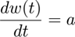
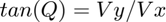
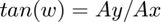
To make linearization, we assumed that
Our system is going to make control for small degree routes
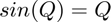
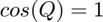
System After Linearization
we assummed velocity = 80 km/hour and delta T=0.001sn 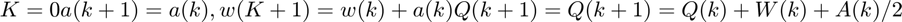 We found our state space vecktors Am,Bm,Cm,Dm
Am = [ 1 1 1/2;0 1 1;0 0 1] Bm = [0 ; 0; 1/80] Cm = [1 0 0] Dm = 1 system=ss(Am,Bm,Cm,Dm);
Am =
1.0000 1.0000 0.5000
0 1.0000 1.0000
0 0 1.0000
Bm =
0
0
0.0125
Cm =
1 0 0
Dm =
1
First part of project:
You can see our system result without any controller and Kalman filter, In this part we see that for one degree mistake our system going to make 1 meter mistake.
u=ones(1,10000)*0.0001; t = linspace(0,10,10000); systemout=sin(lsim(system,u,t)); figure() plot(t,systemout) title('system result in matlab ') %In simulink model = sim('projemodel1.slx'); value = model.systemout; figure() plot(value) title('System result in Symulink')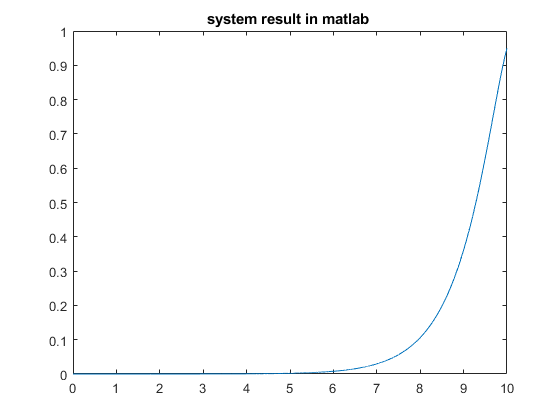 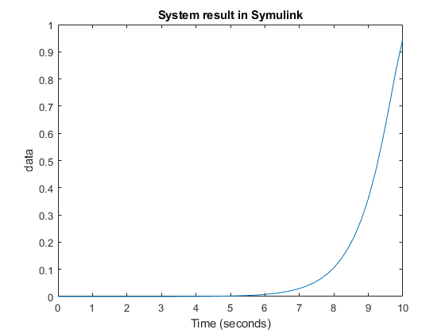
Second part of project
We linearize our system like: (In small degree of Q),
$ Our system result like nonlinearsystem=sin(lsim(system))
%Beacause of this situation We can take our linear system results % X1 is angle of kalman filter, X2 is angler velocity of kalman filter and X3 is angular accelariton of kalman filterand % y1 is kalman filter results as angle of kalman filer. Y1 and X1 are same. Aml = system.A; Bml = system.B; Cml = system.C; Dml = system.D; systeml = ss(Aml,Bml,Cml,Dml); sysTum = ss(Aml,[Bml Bml], Cml, [Dml 1]); % Secon part result in matlab u = u +0.000001*randn(size(u)); y2 = systemout +0.1* randn(size(u))'; u=u'; KalmanLin1 = kalman(sysTum,1,1); KalmanLin2 = kalman(sysTum,1,2); KalmanLin3 = kalman(sysTum,2,1); figure() lsim(KalmanLin1,[u y2],t) title('Q=1 R=1 in matlab') figure() lsim(KalmanLin2,[u y2],t) title('Q=1 R=2 in matlab') figure() lsim(KalmanLin3,[u y2],t) title('Q=2 R=1 in matlab') % Simulink results model = sim('projemodel2.slx'); Kalman21 = model.kalman21; Kalman11 = model.kalman11; Kalman12 = model.kalman12; sistemout = model.Sistemout; figure() subplot(4,1,1) plot(Kalman21) title(' Q = 2 R=1') subplot(4,1,2) plot(Kalman11) title(' Q = 1 R=1') subplot(4,1,3) plot(Kalman12) title(' Q = 1 R=2') subplot(4,1,4) plot(sistemout) title('Orjinal sistem')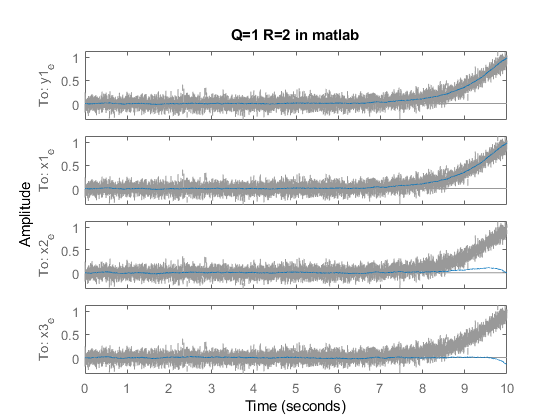 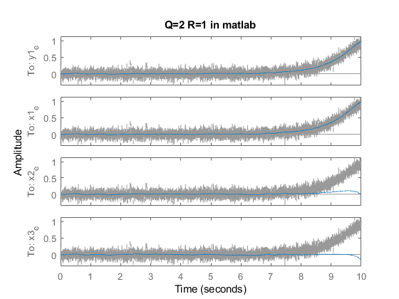 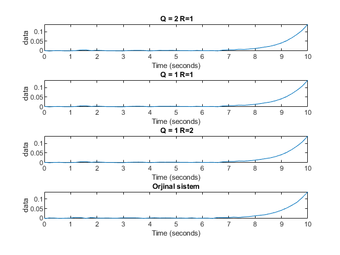
Third part of project
In this part we will going to desing below control system in sumilik. We will apply our system kalman filter and then we use LQI control system. Because of our sin and cos linear assumption, our system can work <0.001 degree or >0.001 degree. Otherwise our linear assumpition is not going to work and our system could result false. Because of this situation our limit is restiricted. We enter our system the degree, which we want to have and our system adjust it angular acceration and It is going to be ended up with desired angle. You can see my system:
figure()
imshow(imread('controlsystem.jpeg'))
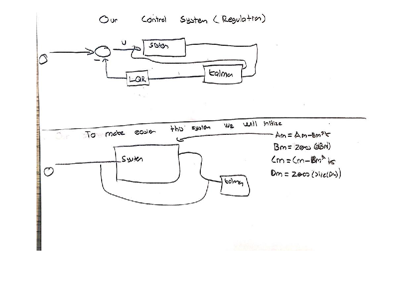 First we will find our LQR VAlUE
Q =1* eye(3);
R = 1;
K = lqr(systeml,Q,R);
%kapal? çevrim sistemimiz cevab?
G= ss(Am-Bm*K , zeros(size(Bm)) ,Cm-Dm*K ,zeros(size(Dm)));
As you can see our system saw 0.001 degree angle and its control ?ts control system makes its angle on degree.
initial(G,[0.0001 0 0]) ylabel('0.000Xdegre') xlabel('t(s)') %%Third part of project Simulink % Then we initilize K value to our system and we design our system. % For making easier simulink design, we initilize our state space in % sumilink as: % Close loop space state values(Am-Bm*K , zeros(size(Bm)) ,Cm-Dm*K , % zeros(size(Dm)) for Am,Bm,Cm,Dm are initilized our system % otherise if we did not initilize our state as close loop % we should draw close loop system. This one is more easy initilizecondition = [0.00001 0 0 ] model = sim('projemodel3.slx'); linearout = model.Linearout; nonlinearout = model.nonlinearout; figure() plot(linearout) ylabel('angle') title('linearout') figure() plot(nonlinearout) title('non-linearout')
initilizecondition =
1.0e-05 *
1.0000 0 0
Warning: Output port 1 of 'projemodel3/Kalman Filter' is not connected.
Warning: Output port 1 of 'projemodel3/Kalman Filter1' is not connected.
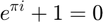
ylabel('angle')
RESULT:
We made one system regulation system, which can follow small angle route which adjusts its acceration in direction-y and direction-x and then our system has input angular acceration and our system uses this angular aceration to adjust its angle. To understande you can look sumary image Our car folows the route like that:
imshow(imread('Result.JPEG'))
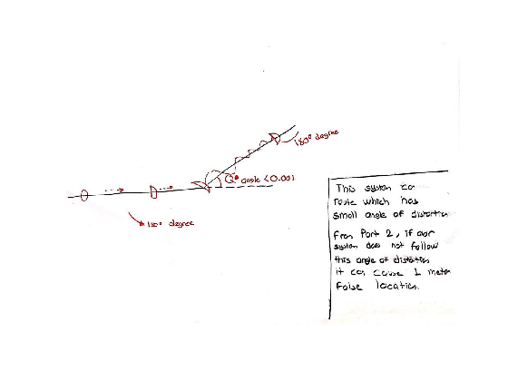